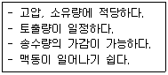
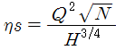
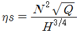
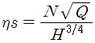
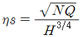
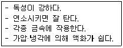

가스기능사 (2013-10-12 기출문제)
1과목: 가스안전관리
1. 가스가 누출되었을 때 조치로써 가장 적당한 것은?
- 용기 밸브가 열려서 누출 시 부근 화기를 멀리하고 즉시 밸브를 잠근다.
- 용기 밸브 파손으로 누출 시 전부 대피한다.
- 용기 안전밸브 누출 시 그 부위를 열습포로 감싸 준다.
- 가스 누출로 실내에 가스 체류 시 그냥 놔두고 밖으로 피신한다.
(정답률: 85%)

2. 무색, 무미, 무취의 폭발범위가 넓은 가연성가스로서 할로겐원소와 격렬하게 반응하여 폭발반응을 일으키는 가스는?
- H2
- Cl2
- HCI
- C2H2
(정답률: 67%)
3. 가스사용시설의 연소기 각각에 대하여 퓨즈콕을 설치하여야 하나, 연소기 용량이 몇 kcal/h를 초과할 때 배관용 밸브로 대용할 수 있는가?
- 12500
- 15500
- 19400
- 25500
(정답률: 66%)
4. C2H2 제조설비에서 제조된 C2H2를 충전용기에 충전 시 위험한 경우는?
- 아세틸렌이 접촉되는 설비부분에 동함량 72%의 동합금을 사용하였다.
- 충전 중의 압력을 2.5MPa 이하로 하였다.
- 충전 후에 압력이 15℃에서 1.5MPa 이하로 될 때까지 정치하였다.
- 충전용 지관은 탄소함유량 0.1% 이하의 강을 사용하였다.
(정답률: 79%)
5. LP가스 저장탱크를 수리할 때 작업원이 저장탱크 속으로 들어가서는 아니 되는 탱크 내의 산소농도는?
- 16%
- 19%
- 20%
- 21%
(정답률: 82%)
6. 고압가스용기 등에서 실시하는 재검사 대상이 아닌 것은?
- 충전할 고압가스 종류가 변경된 경우
- 합격표시가 훼손된 경우
- 용기밸브를 교체한 경우
- 손상이 발생된 경우
(정답률: 73%)
7. 다음 중 제독제로서 다량의 물을 사용하는 가스는?
- 일산화탄소
- 이황화탄소
- 황화수소
- 암모니아
(정답률: 76%)
8. 고압가스 냉매설비의 기밀시험 시 압축공기를 공급할 때 공기의 온도는 몇 ℃ 이하로 할 수 있는가?
- 40℃ 이하
- 70℃ 이하
- 100℃ 이하
- 140℃ 이하
(정답률: 54%)
9. LP가스 저온 저장탱크에 반드시 설치하지 않아도 되는 장치는?
- 압력계
- 진공안전밸브
- 감압밸브
- 압력경보설비
(정답률: 65%)
10. 가연성가스 제조설비 중 전기설비는 방폭성능을 가지는 구조이어야 한다. 다음 중 반드시 방폭성능을 가지는 구조로 하지 않아도 되는 가연성 가스는?
- 수소
- 프로판
- 아세틸렌
- 암모니아
(정답률: 74%)
11. 도시가스 품질검사 시 허용기준 중 틀린 것은?(관련 규정 개정전 문제로 여기서는 기존 정답인 2번을 누르면 정답 처리됩니다. 자세한 내용은 해설을 참고하세요.)
- 전유황 : 30mg/m3 이하
- 암모니아 : 10mg/m3 이하
- 할로겐총량 : 10mg/m3 이하
- 실록산 : 10mg/m3 이하
(정답률: 80%)
12. 포스겐의 취급 방법에 대한 설명 중 틀린 것은?
- 환기시설을 갖추어 작업한다.
- 취급 시에는 반드시 방독마스크를 착용한다.
- 누출 시 용기가 부식되는 원인이 되므로 약간의 누출에도 주의한다.
- 포스겐을 함유한 폐기액은 염화수소로 충분히 처리한 후 처분한다.
(정답률: 82%)
13. 가스보일러의 공통 설치기준에 대한 설명으로 틀린 것은?
- 가스보일러는 전용보일러실에 설치한다.
- 가스보일러는 지하실 또는 반지하실에 설치하지 아니한다.
- 전용보일러실에는 반드시 환기팬을 설치한다.
- 전용보일러실에는 사람이 거주하는 곳과 통기될 수 있는 가스렌지 배기덕트를 설치하지 아니한다.
(정답률: 54%)
14. 수소 가스의 위험도(H)는 약 얼마인가?
- 13.5
- 17.8
- 19.5
- 21.3
(정답률: 65%)
15. 액화석유가스 용기충전시설의 저장탱크에 폭발방지장치를 의무적으로 설치하여야 하는 경우는?
- 상업지역에 저장능력 15톤 저장탱크를 지상에 설치하는 경우
- 녹지지역에 저장능력 20톤 저장탱크를 지상에 설치하는 경우
- 주거지역에 저장능력 5톤 저장탱크를 지상에 설치하는 경우
- 녹지지역에 저장능력 30톤 저장탱크를 지상에 설치하는 경우
(정답률: 66%)
16. 다음 가스 저장시설 중 환기구를 갖추는 등의 조치를 반드시 하여야 하는 곳은?
- 산소 저장소
- 질소 저장소
- 헬륨 저장소
- 부탄 저장소
(정답률: 84%)
17. 고압가스 용기를 내압 시험한 결과 전증가량은 400mL, 영구증가량이 20mL이었다. 영구증가율은 얼마인가?
- 0.2%
- 0.5
- 5%
- 20%
(정답률: 62%)
18. 염소의 일반적인 성질에 대한 설명으로 틀린 것은?
- 암모니아와 반응하여 염화암모늄을 생성한다.
- 무색의 자극적인 냄새를 가진 독성, 가연성 가스이다.
- 수분과 작용하면 염산을 생성하여 철강을 심하게 부식시킨다.
- 수돗물의 살균 소독제, 표백분 제조에 이용된다.
(정답률: 70%)
19. 독성가스 용기 운반차량의 경계표지를 정사각형으로 할 경우 그 면적의 기준은?
- 500cm2 이상
- 600cm2 이상
- 700cm2 이상
- 800cm2 이상
(정답률: 70%)
20. 독성가스인 염소를 운반하는 차량에 반드시 갖추어야 할 용구나 물품에 해당되지 않는 것은?
- 소화장비
- 제독제
- 내산장갑
- 누출검지기
(정답률: 79%)
21. 다음 중 연소기구에서 발생할 수 있는 역화(back fire)의 원인이 아닌 것은?
- 염공이 적게 되었을 때
- 가스의 압력이 너무 낮을 때
- 콕이 충분히 열리지 않았을 때
- 버너 위에 큰 용기를 올려서 장시간 사용할 경우
(정답률: 64%)
22. 다음 중 특정고압가스에 해당되지 않는 것은?
- 이산화탄소
- 수소
- 산소
- 천연가스
(정답률: 74%)
23. 일반도시가스 배관의 설치기준 중 하천 등을 횡단하여 매설하는 경우로서 적합하지 않은 것은?
- 하천을 횡단하여 배관을 설치하는 경우에는 배관의 외면과 계획하상(河床, 하천의 바닥) 높이와의 거리는 원칙적으로 4.0m 이상으로 한다.
- 소하천, 수로를 횡단하여 배관을 매설하는 경우 배관의 외면과 계획하상(河床, 하천의 바닥) 높이와의 거리는 원칙적으로 2.5m 이상으로 한다.
- 그 밖의 좁은 수로를 횡단하여 배관을 매설하는 경우 배관의 외면과 계획하상(河床, 하천의 바닥) 높이와의 거리는 원칙적으로 1.5m 이상으로 한다.
- 하상변동, 패임, 닻내림 등의 영향을 받지 아니하는 깊이에 매설한다.
(정답률: 60%)
24. 일반 공업지역의 암모니아를 사용하는 A공장에서 저장능력 25톤의 저장탱크를 지상에 설치하고자 한다. 저장설비 외면으로부터 사업소 외의 주택까지 몇 m 이상의 안전거리를 유지하여야 하는가?
- 12m
- 14m
- 16m
- 18m
(정답률: 53%)
25. 다음 중 폭발범위의 상한값이 가장 낮은 가스는?
- 암모니아
- 프로판
- 메탄
- 일산화탄소
(정답률: 80%)
26. 고압가스 설비의 내압 및 기밀시험에 대한 설명으로 옳은 것은?
- 내압시험은 상용압력의 1.1배 이상의 압력으로 실시한다.
- 기체로 내압시험을 하는 것은 위험하므로 어떠한 경우라도 금지된다.
- 내압시험을 할 경우에는 기밀시험을 생략할 수 있다.
- 기밀시험은 상용압력 이상으로 하되, 0.7MPa을 초과하는 경우 0.7MPa 이상으로 한다.
(정답률: 61%)
27. 저장탱크에 의한 LPG 사용시설에서 가스계량기의 설치기준에 대한 설명으로 틀린 것은?
- 가스계량기와 화기와의 우회거리 확인은 계량기의 외면과 화기를 취급하는 설비의 외면을 실측하여 확인한다.
- 가스계량기는 화기와 3m 이상의 우회거리를 유지하는 곳에 설치한다.
- 가스계량기의 설치높이는 1.6m 이상, 2m 이내에 설치하여 고정한다.
- 가스계량기와 굴뚝 및 전기점멸기와의 거리는 30cm 이상의 거리를 유지한다.
(정답률: 68%)
28. 차량에 고정된 탱크로서 고압가스를 운반할 때 그 내용적의 기준으로 틀린 것은?
- 수소 : 18000L
- 액화 암모니아 : 12000L
- 산소 : 18000L
- 액화 염소 : 12000L
(정답률: 62%)
29. 고압가스특정제조시설에서 안전구역 안의 고압가스설비는 그 외면으로부터 다른 안전구역 안에 있는 고압가스설비의 외면까지 몇 m 이상의 거리를 유지하여야 하는가?
- 5m
- 10m
- 20m
- 30m
(정답률: 45%)
30. 다음 중 독성가스에 해당하지 않는 것은?
- 아황산가스
- 암모니아
- 일산화탄소
- 이산화탄소
(정답률: 88%)
2과목: 가스장치 및 기기
31. 고압식 공기액화 분리장치의 복식정류탑 하부에서 분리되어 액체산소 저장탱크에 저장되는 액체 산소의 순도는 약 얼마인가?
- 99.6~99.8%
- 96~98%
- 90~92%
- 88~90%
(정답률: 76%)
32. 초저온 용기의 단열성능 검사 시 측정하는 침입열량의 단위는?
- ㎉/h·ℓ·℃
- ㎉/m2·h·℃
- ㎉/m·h·℃
- ㎉/m·h·bar
(정답률: 59%)
33. 저장능력 10톤 이상의 저장탱크에는 폭발방지장치를 설치한다. 이때 사용되는 폭발방지제의 재질로서 가장 적당한 것은?
- 탄소강
- 구리
- 스테인리스
- 알루미늄
(정답률: 54%)
34. 긴급차단장치의 동력원으로 가장 부적당한 것은?
- 스프링
- X선
- 기압
- 전기
(정답률: 80%)
35. 다음 중 1차 압력계는?
- 부르동관 압력계
- 전기 저항식 압력계
- U자관형 마노미터
- 벨로우즈 압력계
(정답률: 59%)
36. 압축기의 윤활에 대한 설명으로 옳은 것은?
- 산소압축기의 윤활유로는 물을 사용한다.
- 염소압축기의 윤활유로는 양질의 광유가 상용된다.
- 수소압축기의 윤활유로는 식물성유가 사용된다.
- 공기압축기의 윤활유로는 식물성유가 사용된다.
(정답률: 81%)
37. 다음 금속재료 중 저온재료로 가장 부적당한 것은?
- 탄소강
- 니켈강
- 스테인리스강
- 황동
(정답률: 77%)
38. 다음 유량 측정방법 중 직접법은?
- 습식가스미터
- 벤투리미터
- 오리피스미터
- 피토튜브
(정답률: 60%)
39. 내용적 47 ℓ인 LP가스 용기의 최대 충전량은 몇 ㎏ 인가? (단, LP가스 정수는 2.35이다.)
- 20
- 42
- 50
- 110
(정답률: 73%)
40. 다음 중 정압기의 부속설비가 아닌 것은?
- 불순물 제거장치
- 이상압력상승 방지장치
- 검사용 맨홀
- 압력기록장치
(정답률: 85%)
41. 다음 [보기]의 특징을 가지는 펌프는?

- 원심 펌프
- 왕복 펌프
- 축류 펌프
- 사류 펌프
(정답률: 66%)
42. 터보식 펌프로서 비교적 저양정에 적합하며, 효율 변화가 비교적 급한 펌프는?
- 원심 펌프
- 축류 펌프
- 왕복 펌프
- 베인 펌프
(정답률: 57%)
43. 산소용기의 최고 충전압력이 15MPa 일 때 이 용기의 내압 시험압력은 얼마인가?
- 15MPa
- 20MPa
- 22.5MPa
- 25MPa
(정답률: 41%)
44. 기화기에 대한 설명으로 틀린 것은?
- 기화기 사용 시 장점은 LP가스 종류에 관계없이 한냉 시에도 충분히 기화시킨다.
- 기화장치의 구성요소 중에는 기화부, 제어부, 조압부 등이 있다.
- 감압가열 방식은 열교환기에 의해 액상의 가스를 기화시킨 후 조정기로 감압시켜 공급하는 방식이다.
- 기화기를 증발형식에 의해 분류하면 순간 증발식과 유입 증발식이 있다.
(정답률: 61%)
45. 펌프에서 유량을 Qm3/min, 양정을 Hm, 회전수 Nrpm이라 할 때 1단 펌프에서 비교 회전도 ηs를 구하는 식은?




(정답률: 57%)
3과목: 가스일반
46. 액체 산소의 색깔은?
- 담황색
- 담적색
- 회백색
- 담청색
(정답률: 83%)
47. LPG에 대한 설명 중 틀린 것은?
- 액체상태는 물(비중 1)보다 가볍다.
- 가화열이 커서 액체가 피부에 닿으면 동상의 우려가 있다.
- 공기와 혼합시켜 도시가스 원료로도 사용된다.
- 가정에서 연료용으로 사용하는 LPG는 올레핀계 탄화수소이다.
(정답률: 71%)
48. “기체의 온도를 일정하게 유지할 때 기체가 차지하는 부피는 절대 압력에 반비례한다.”라는 법칙은?
- 보일의 법칙
- 샤를의 법칙
- 헨리의 법칙
- 아보가드로의 법칙
(정답률: 72%)
49. 압력 환산 값을 서로 가장 바르게 나타낸 것은?
- 1lb/ft2 ≒ 0.142㎏/cm2
- 1㎏/cm2 ≒ 13.7lb/In2
- 1atm ≒ 1033g/cm2
- 76㎝Hg ≒ 1013dyne/cm2
(정답률: 65%)
50. 절대온도 0K는 섭씨온도 약 몇 ℃ 인가?
- -273
- 0
- 32
- 273
(정답률: 81%)
51. 수소와 산소 또는 공기와의 혼합기체에 점화하면 급격히 화합하여 폭발하므로 위험하다. 이 혼합기체를 무엇이라고 하는가?
- 염소 폭명기
- 수소 폭명기
- 산소 폭명기
- 공기 폭명기
(정답률: 79%)
52. 기체연료의 일반적인 특징에 대한 설명으로 틀린 것은?
- 완전연소가 가능하다.
- 고온을 얻을 수 있다.
- 화재 및 폭발의 위험성이 적다.
- 연소조절 및 점화, 소화가 용이하다.
(정답률: 82%)
53. 다음 중 압력단위가 아닌 것은?
- ㎩
- atm
- bar
- N
(정답률: 84%)
54. 공기비가 클 경우 나타나는 현상이 아닌 것은?
- 통풍력이 강하여 배기가스에 의한 열손실 증대
- 불완전연소에 의한 매연발생이 심함.
- 연소가스 중 SO3의 양이 증대되어 저온 부식 촉진
- 연소가스 중 NO2의 발생이 심하여 대기오염 유발
(정답률: 64%)
55. 표준상태에서 1몰의 아세틸렌이 완전연소될 때 필요한 산소의 몰 수는?
- 1몰
- 1.5몰
- 2몰
- 2.5몰
(정답률: 72%)
56. 다음 [보기]에서 설명하는 가스는?

- HCl
- NH3
- CO
- C2H2
(정답률: 68%)
57. 질소의 용도가 아닌 것은?
- 비료에 이용
- 질산제조에 이용
- 연료용에 이용
- 냉매로 이용
(정답률: 67%)
58. 27℃, 1기압 하에서 메탄가스 80g 이 차지하는 부피는 약 몇 ℓ인가?
- 112
- 123
- 224
- 246
(정답률: 48%)
59. 산소 농도의 증가에 대한 설명으로 틀린 것은?
- 연소속도가 빨라진다.
- 발화온도가 올라간다.
- 화염온도가 올라간다.
- 폭발력이 세어진다.
(정답률: 76%)
60. 다음 중 보관 시 유리를 사용할 수 없는 것은?
- HF
- C6H6
- NaHCO3
- KBr
(정답률: 80%)